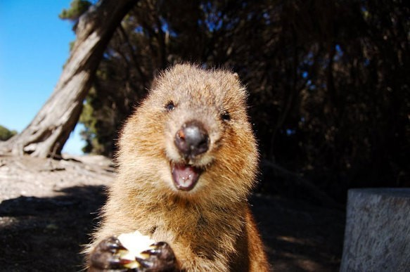
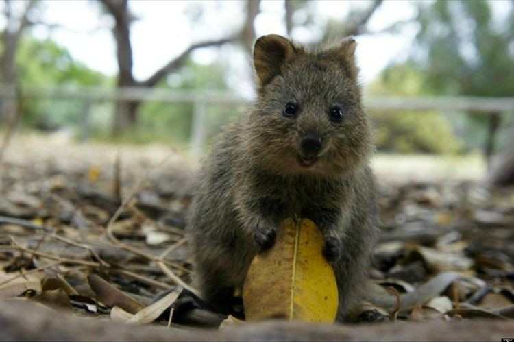

세상에서 가장 행복한 동물


나는 쿼카 :)
캥거루과의 소형 유대류. 오스트레일리아 서남부의 로트네스트 섬(Rottnest Island)과 그 주변 도서에 서식한다. 무게는 2.5kg에서 3kg가량에 크기는 40~90cm, 꼬리 길이는 25~30cm로 고양이나 소형견과 비슷한 덩치를 가지고 있다. 둥글고 땅딸막한 귀를 가지고 있으며 털색은 회색빛을 띈 갈색이다.
쿼카는 황무지나 습지 등지에서 서식하며, 무리를 지어 살며 땅굴을 판다. 초식성 동물이며 식물성 식품에서 잔디나 풀잎을 먹기도 한다. 임신 기간은 27일. 한 번에 한 마리의 새끼를 낳는다. 캥거루과 동물답게 새끼를 주머니에 넣어 기른다.
쿼카의 주요 서식지인 로트네스트 섬의 이름은 네덜란드어로 'rat nest'라는 뜻인데, 이는 쿼카를 처음 본 유럽인들이 쿼카를 쥐로 보고 섬 이름을 지었기 때문이다.